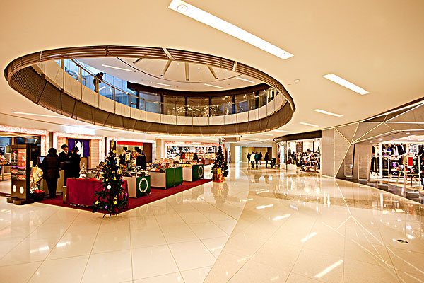
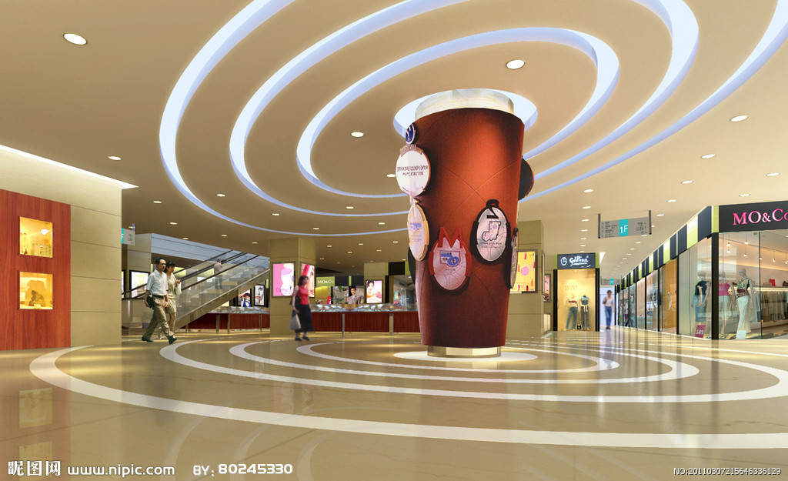

定位
首页
场地选择
空间场地
商业中心场地
试驾场地
主题乐园
城市步行街场地
儿童游乐场场地
商场加盟
异业合作
联系我们
010-81579886
注册
|
登录
小黄人与美人鱼地方有个美丽而神奇的神话故事
2022,我们来了！中国如何成为全球脱贫最好案例
小黄人是电影《神偷奶爸》中的角色，在《神偷奶爸》系列设定中是格鲁和纳瓦利欧博士用两杯香蕉泥、变种DNA和脂肪酸组成的胶囊状生物，而在小黄人的自传片《小黄人大眼萌》中，小黄人是亿万年前单细胞进化的生物，小黄人的历史至少可追溯到恐龙时期。 小黄人的现任主人是格鲁和纳瓦利欧，他们主要为纳瓦利欧建造工程、充当格鲁的试验品，或者格鲁三个可爱的女儿表演没人看时，数量庞大的小黄人可以充当观众。 小黄人爱闹内讧，如果打起架来，轻则十几个对打，重则动用火箭筒，但谁要是想伤害他们或格鲁一家，他们就会把枪口一致对外，小黄人的语言通常为各种语言的混杂。但是电影表述的中心思想还是正义最终一定会打败恶势力，主人公格鲁在小黄人的帮助下，最终战胜了恶势力！ 小黄人的形象一出来，就受到很多观众的好评，很多电影周边系列产品相继制作销售，小黄人的经典话语也被观众争相模仿，掀起一阵狂热。最后在小黄人大眼萌里配角翻身做主人。
统称：Minions[1]
眼睛：单只或双只
小黄人
小黄人(7张)
头发：刺头、塌塌的小中分、冲天一小撮、无头发
身型：黄色胶囊状
身高：94~120cm，105cm为标准型
性格：吵闹、易满足、爱享受、听主人话、乐于助人、团结
属性：呆蠢、贱萌的技术宅
喜欢：大笑、玩耍
讨厌：被嘲笑
语言：汉语、法语、英语、日语、西班牙语和意大利语等混杂语
喜爱食物：各种水果蔬菜尤其热爱香蕉、冰激凌
在《神偷奶爸》中，小黄人军团绝对是最让人“无法直视”的角色。这些短胳膊短腿、爱吃香蕉的可爱小黄人们不但工作效率极高，还有一种能把事情搞砸的奇异天赋。他们拥有极其强大的表演能力，能cosplay任何一种职业。如此神通广大，小黄人究竟是外星生物还是机器人，引起了影迷们的广泛讨论。[1] 制片人克里斯托弗·麦雷丹德瑞透露，在动画设计之初，小黄人造型和大银幕呈现的形象相去甚远，它们大多是满身斑点、形状不规则，并且插有天线的肉团。他还介绍道，整个动画制作团队设计出上千稿的小黄人造型，并找来很多各行各业的人进行调研访问，最终才甄选到我们看到的胶囊造型。 直到后来的小黄人外传公布之后我们才知道，原来小黄人的存在历史极长，和恐龙还有一段不解之缘。而且还由于失误从而成功地消灭了吸血鬼德古拉。[3] 从编剧透露的信息看来，小黄人是从单细胞生物进化来的。 小紫人 至于第二部中出现的小紫人，该片制片人珍娜·海莉解释道：“拥有狂野的发型和大大的牙齿的新角色是我们可爱的小黄人的对立面，因为紫色正好是黄色的对立色，所以这些邪恶的小人就被设置成紫色的了，不过他们做坏事方式看起来也会很有趣。” 谈及小紫人故事桥段的构思，珍娜·海莉介绍说他们的灵感其实来自于经典动画《乐一通》。“在《乐一通》中，有一只叫小翠的小鸟在喝了药水之后就会变成可怕的怪兽，一些可爱的东西变成可怕的怪兽这个创意总是会很吸引人。”珍娜·海莉表示。 语言：汉语、法语、英语、日语、西班牙语和意大利语等混杂语
喜爱食物：各种水果蔬菜尤其热爱香蕉、冰激凌
在《神偷奶爸》中，小黄人军团绝对是最让人“无法直视”的角色。这些短胳膊短腿、爱吃香蕉的可爱小黄人们不但工作效率极高，还有一种能把事情搞砸的奇异天赋。他们拥有极其强大的表演能力，能cosplay任何一种职业。如此神通广大，小黄人究竟是外星生物还是机器人，引起了影迷们的广泛讨论。[1] 制片人克里斯托弗·麦雷丹德瑞透露，在动画设计之初，小黄人造型和大银幕呈现的形象相去甚远，它们大多是满身斑点、形状不规则，并且插有天线的肉团。他还介绍道，整个动画制作团队设计出上千稿的小黄人造型，并找来很多各行各业的人进行调研访问，最终才甄选到我们看到的胶囊造型。 直到后来的小黄人外传公布之后我们才知道，原来小黄人的存在历史极长，和恐龙还有一段不解之缘。而且还由于失误从而成功地消灭了吸血鬼德古拉。[3] 从编剧透露的信息看来，小黄人是从单细胞生物进化来的。 小紫人 至于第二部中出现的小紫人，该片制片人珍娜·海莉解释道：“拥有狂野的发型和大大的牙齿的新角色是我们可爱的小黄人的对立面，因为紫色正好是黄色的对立色，所以这些邪恶的小人就被设置成紫色的了，不过他们做坏事方式看起来也会很有趣。” 谈及小紫人故事桥段的构思，珍娜·海莉介绍说他们的灵感其实来自于经典动画《乐一通》。“在《乐一通》中，有一只叫小翠的小鸟在喝了药水之后就会变成可怕的怪兽，一些可爱的东西变成可怕的怪兽这个创意总是会很吸引人。”珍娜·海莉表示。 (责编：常雪梅、高雷)
来源：www.baidu.com
申请合作/项目加盟
省份
50-80
80-150
150-300
300以上
城市
50-80
80-150
150-300
300以上
确定
取消
Close
更多新闻

习近平擘画"绿水青山就是金山银山" ：划定生态红线 推动绿色发展
习近平同志长期以来对“绿水青山就是金山银山”的理念有着深刻的认识，在福建、浙江等地工作期间，他将自己的想法付诸于地方工作的实践，用行动和事实带动干部群众一起干，改变过去经济发展的老路，使得绿色发展观念深入人心。

习近平擘画"绿水青山就是金山银山" ：划定生态红线 推动绿色发展
习近平同志长期以来对“绿水青山就是金山银山”的理念有着深刻的认识，在福建、浙江等地工作期间，他将自己的想法付诸于地方工作的实践，用行动和事实带动干部群众一起干，改变过去经济发展的老路，使得绿色发展观念深入人心。
习近平擘画"绿水青山就是金山银山" ：划定生态红线 推动绿色发展
习近平同志长期以来对“绿水青山就是金山银山”的理念有着深刻的认识，在福建、浙江等地工作期间，他将自己的想法付诸于地方工作的实践，用行动和事实带动干部群众一起干，改变过去经济发展的老路，使得绿色发展观念深入人心。
习近平擘画"绿水青山就是金山银山" ：划定生态红线 推动绿色发展
习近平同志长期以来对“绿水青山就是金山银山”的理念有着深刻的认识，在福建、浙江等地工作期间，他将自己的想法付诸于地方工作的实践，用行动和事实带动干部群众一起干，改变过去经济发展的老路，使得绿色发展观念深入人心。